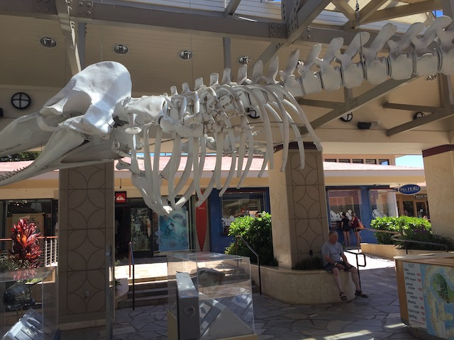
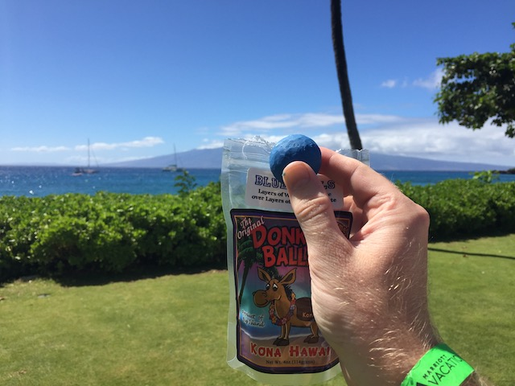
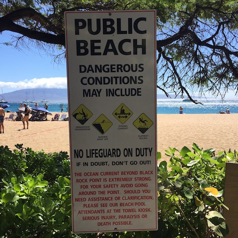
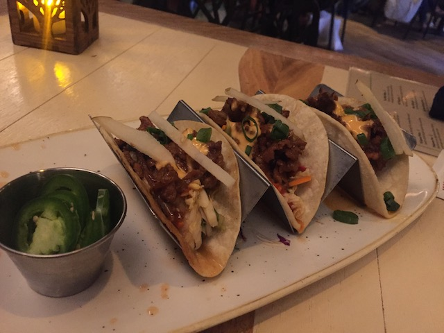
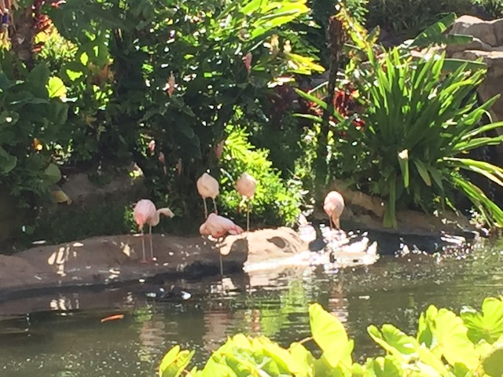
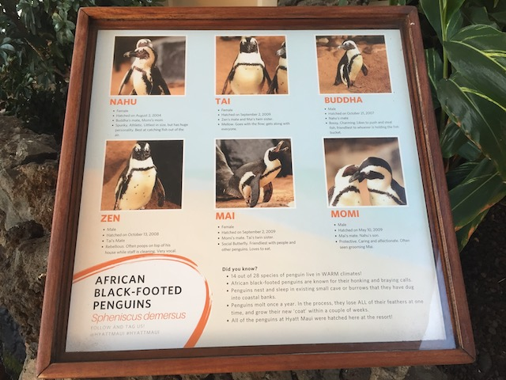
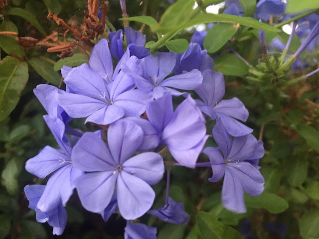

| |
Hawaii 2021
All right. It's time for another big trip. And....we're heading back to Hawaii. So the reason we're back so soon is....my brother-in-law's family goes to Hawaii A LOT, and since my family and his family have really taken a shine to one another, they invited us. So...we're back here in Hawaii. And a quick little note. Hawaii has far stricter COVID rules requiring you to show proof of vaccination (That's what the wristband is for) to visit the state (Pretty sure the rule is no longer in place as of posting the update)
I know it's barely been a month since our last big trip, but because nearly every single day between now and then was nothing but work, stress, and sh*t, this vacation was BADLY needed and overdue.
Thanks American Airlines for having WiFi everywhere EXCEPT ON YOUR HAWAII ROUTES!!! DAMN YOU PACIFIC OCEAN (Oh, but you can so convinently do the Atlantic Ocean for those flights to London)!!!
Hey Jason! Wake up! There's something outside your window besides ocean!
OK. This is REALLY concerning. The entire island of Maui appears F*CKING BROWN!!! Sure, right by the coast and the touristy sections look nice, but the rest of the island just looks DAMN NEAR DEAD!!! I know part of this is just nature, but....climate change is definately making this worse. I mean for crying out loud! This is making drought-filled Southern California look green in comparison!
That wasn't a long flight. Now flying from LA to Shanghai. THAT was a long flight. ;)
Aloha. I'm back. Now why aren't I being greeted with a lei?
Arrive in Hawaii, and first things first, stopping at the Makai Tiki Bar.
🎵In the Tiki Tiki Tiki Tiki Tiki Bar. In the Tiki Tiki Tiki Tiki Tiki Bar. All the babes show skin and the drunks drool in the Tiki Tiki Tiki Tiki Bar🎵
What sort of topsy turvy world are you living in where people care about helping others?
Well, that was a short day in Hawaii. But hey. There's plenty more fun to be had. =)
 Yep. We're not only back in Hawaii on the same island, but we're even at the exact same resort that we stayed at back in 2018.
Yep. We're not only back in Hawaii on the same island, but we're even at the exact same resort that we stayed at back in 2018.
It may be a little repetitive, but it's still really nice and I had a really good time. So I'm still glad to be here.
It wouldn't be an island vacation without a little bit of Tiki Head action! =)
Ooh. Artsy shot of the Gardenia.
For those of you who need a detailed map of Maui, here you go.
What's up dude!?
If you remember from last time, a lot of time is spent in Whalers Village due to its close proximity to the resort and being the go-to spot if you need to buy anything.
They had to get the name Whaler's Village from somewhere. ;)

Sadly, not all of the whales wind up surviving Whaler's Village.
So if you recall my original Hawaii Update from when I was a cringy teenager and the site was still in its infancy, there was a candy called Half-Ass Donkey Balls that stupid 14 year-old me thought it was funny because "Ha Ha! Swearing!", Well, now as an adult, I'm checking out its sibling, Blue Balls, because 29 year old me thinks "Ha Ha! Blue Balls! Sex joke!".

Immature sex-joke aside, the candy is all right. It's basically a chocolate-covered Macadamia Nut, only dyed blue for the whole "Blue Balls" joke. I probably should've gotten the Sea-Salt ones as I would've probably enjoyed that more. But I just couldn't turn down the immature sex joke.

Pretty sure most tourists aren't taking the risk into account. Just saying. =P
This may look like an ordinary rock, but it actually shows that you're on the Ka'anapali Historical Trail, which considering is a big part of cliff jumping history, it's fascinating to learn about.
No, that is not one of the many pools they have. Do not swim in there.
Sorry Jason. We couldn't afford to get a room out here. So we're just gonna have to sleep in the hammock for the week.
Even the sun sets in paradise. Which is why it's so well known for its gorgeous sunsets.
Hey. Just chilling at the hotel for the night. That sounds fun.
Very pretty painting of a beach found in our villa.
OK. So as you may know, this trip, along with nearly everything that happened in 2021 was originally meant for 2020. But you know, COVID-19 pushed EVERYTHING back. But for a brief moment in 2020, before COVID ruined the whole world, there was a big thing of drama about this trip since....I only have such a limited amount of time off from work, and this was conflicting with the East Coast Trip going on as....I wouldn't be able to take time off from both. But that whole drama died because.....COVID killed both trips. Great, now I get to do neither. Well, fast foreward to 2021. The same situation is happening, except....now there's a solution. My job is now having me work remotely from home. And....hey. I can just take my laptop with me. So yeah. This trip essentially turned into a workcation since...I've been here before. So this was gonna be a laid back trip anyways, and I could use my actual time off for the East Coast Trip. Hawaii being 3 hours beind (2 in the winter) meant I was off relatively early and still had all afternoon to go explore, check out the beaches, eat out, and just have fun. And honestly, I expect to take many more workcations in the future because this worked out great (To far more relaxing laid back places like here. A roller-coaster workcation, simply won't work). Thank you COVID for making remote work the new norm (Don't you f*cking DARE go back to the old way!) =)
Hi there. Mr. Smily Face just here to remind you to put on sunscreen. Don't neglect on this or you'll pay dearly. Don't be a poor sucker like Kevin who learned the hard way. =)
OK. We've been in Hawaii for how long without going in the ocean!? Workcation or not, that is unacceptable!
So sadly, I have no snorkeling pictures due to me neglecting to bring my GoPro due to....living situation at the time and the whole chaos of the time between the East Coast Trip and Hawaii that I'm honestly amazed I made it here in one peice and didn't fall apart and go insane. But I really regret it as I would've gotten some great shots, including a sea turtle close up. But you can check out some of the cool snorkeling shots from my 2018 Update.
All right. Time to start eating out. That's a huge part of vacationing in Hawaii.
Nothing special about tonight. Just a burger. Good, but standard.
Twilight swim anyone? It won't resort to skinny-dipping! I promise!
These two are really good at holding each other up. I think this has to be some sort of record.
Hello Japanese Soribashi Bridge.
Love this sun almost set, but still peeking out shot of the beach.
Ooh. What's this?
So we technically weren't supposed to see this as it's for the hotel guests next door. But we snuck in and saw the Luau cause....hey! It's Hawaii!
We may not have seen the whole show since....we didn't have seats. We were just watching from the distance. But it was still really cool to see 10 minutes of the show and see some Hawaiian culture.
 Night falls upon Hawaii, but the fun just continues.
Night falls upon Hawaii, but the fun just continues.
Exploring the hotel next door.
Hawaiian S'mores anyone?
Palm Trees swaying in the wind at night. Very nice.
I can not see that without thinking of the Michael Jackson song from Free Willy (now it's stuck in my head damn it).
Though it may feel like cynical marketing (Hey kids! Buy our sunscreen! Crush from Finding Nemo says so!), it actually is true that your sunscreen can really f*ck up the ocean.
Yeah. We booked a Jet-Skiing experience later. Probably shouldn't thanks to my finances, but f*ck it!
Insert Hitchhikers Guide to the Galaxy joke here.
Any time, any place. I will kick your ass in giant checkers.
Yeah. It may not be as exciting as snorkeling out in the Pacific Ocean, but these still are some really nice pools.
Sorry little little kids. But this mini-slide is closed today.
This is fun and all, but can you add a Master Blaster or a Toilet Bowl (preferably a body bowl like Bazooka Bowls)? That would REALLY be appreciated.
Every single time the sun goes down for a nap.
Now this sounds like my kind of resteraunt. =)
And of course, it wouldn't be a Hawaii Trip without some cliff jumping. Yeah, Black Rock is pretty small at only 25 ft, and I miss the extreme stuff (I wanna jump the 70 ftr again), but I still had a lot of fun jumping it.
And considering how nearly all the good cliff jumping spots in California are dying thanks to climate change, this is our only chance to cliff jump this year, which is really f*cking depressing. DO SOMETHING ABOUT CLIMATE CHANGE!!! AND NOT JUST FOR CLIFF JUMPING REASONS!!! WE'RE ALL F*CKED IF THE CORRUPT IDIOTS DON'T F*CKING DO SOMETHING!!!
And of course, they have a show up at Black Rock since Black Rock actually is very historically important to Hawaiian culture, which is really cool.
 I know the slide itself is nothing special, but having the slide basically be the same material as the bottom of the pool is really cool. I so would've gone down, except I didn't want to get yelled at for going down the slide of a hotel complex I'm not staying at.
I know the slide itself is nothing special, but having the slide basically be the same material as the bottom of the pool is really cool. I so would've gone down, except I didn't want to get yelled at for going down the slide of a hotel complex I'm not staying at.
It was fine when Disney bought Star Wars. I tolerated them buying Marvel. I even held my tougne at them buying FOX. But the Fine Art market, they've crossed a line! This is too far! =)
I really enjoyed Monkeypod Kitchen A LOT on the last Hawaii trip in 2018. So naturally, we had to go back.
What's been something that this vacation has been lacking? Oh right! Booze! Not a tropical laid back vacation without some alcohol!
Gonna have to start making my own White Walkers. Or just cocktails in general. I've got some ideas brewing. >=)

Once again, those jalapeno tacos are EXTREMELY good.
 Well, the trip has been fun and all, but the time has come to go back home. On the boat everyone!
Well, the trip has been fun and all, but the time has come to go back home. On the boat everyone!
OK. Just kidding. This boat is WAY too small to travel home on (plus, we have round-trip plane tickets). So why are we here?
Don't end up like this dipsh*t. Don't be an idiot.
Jet Skiing Time is finally here!
OH MY GOD!!! JET SKIING IS F*CKING AWESOME!!!
Going 70 mph on the ocean is just SO DAMN FUN!!! And going that fast over waves provides some NICE EJECTOR AIR MOMENTS!!! This is so fun that I'd want to Jet-Ski all the way home! Obviously, I can't do so. There's not enough gas, food, and I'd get lost and probably crashland somewhere in Antarctica (assuming I didn't crash into the Big Island) if I don't die first. But I genuinely would've jet-skiied over to Lanai (another Hawaiian island that's always visible from Lahina. You've seen it in some photos here) if it wasn't for the fact that I'd get in serious trouble and owe a sh*tload of money that I don't have.
I am SO doing this next Hawaii trip or any sort of tropical beach vacation (a new place would be nice). SO WORTH IT!!! (Really wish I had brought my GoPro)
 This was great as I could go crazy at 70 mph with insane ejector air, and Jason could go fast enough to have fun without going crazy. A perfect activity. Four thumbs up.
This was great as I could go crazy at 70 mph with insane ejector air, and Jason could go fast enough to have fun without going crazy. A perfect activity. Four thumbs up.
CLIFF JUMP!!!

Someone call the local zoo! It appears that the flamingos have escaped!
For the final dinner, we decided to head on over for a big group dinner at Hula Grill.
You may not think it from the name, but the food at Hula Grill is actually extremely luxurious and high quality.
Don't think that camel is storing any water in its humps. ;)
What do you mean I can't cliff jump here?

Penguins in Hawaii? You sure this isn't a bad Dreamworks Spinoff Movie?
Aww. Cutsey Instagram couple shot that most people would probably frame (Bah! Give us something from Tokyo Disney Sea! Now THAT is something we'll frame).
Please buy our worthless crap.
Very pretty waterfall.

The violets may not be as iconic to Hawaii, but they are still very nice.
Uh....Jason. What the hell are you doing?
So we decided to climb out onto the Jetty. Well....Jason decided to and I followed him out. Why? Uh....adventure!
YAY!!! WE MADE IT!!!
Eh...this feels like a dumb idea. But....anything to help Jason be more adventerous. And even if we fell into the ocean, it's warm and not that far out, so we could swim back to shore. I'd just be out an Iphone.
And of course, it's not a trip to Hawaii without a pineapple involved.
So everyone else has left, but we have an evening flight. So we have a little bit of a bonus morning in Hawaii. So now, we're checking out the area outside the resort because hey. It's also really nice.
 There's the jetty we climbed onto last night in full daylight.
There's the jetty we climbed onto last night in full daylight.
"We don't like to be pet. We're not your dog. Or your buddy."
You want a postcard photo of your resort from a far? Well, here you go. You're welcome.
All right. Time to head back to the airport and to sh*tty reality. Boo! >=( (Though is it me or does the island look greener? Very happy to see that)
And that was our 3rd Hawaii Trip. Despite me spending 1/3 of the time at work, I still had a blast, got to experience a ton of fun stuff, and just relaxed and was able to unwind, and explore a place in great detail. Hope to go back to Hawaii, and hopefully a new island next time. But regardless, this was a super fun week.
Home
|